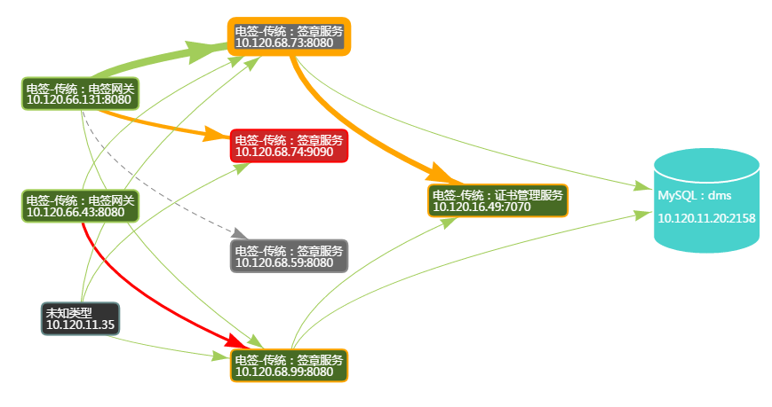
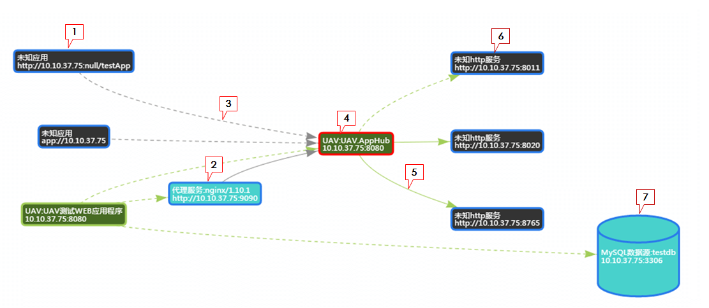
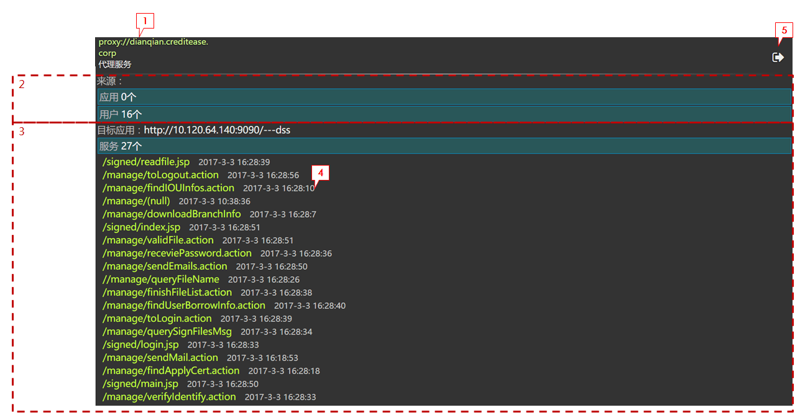

服务流
名词解释
服务流
静态拓扑
是描绘服务本体，服务之间的关联。
运行时特性
主要是描述服务过程以及调用过程的一系列监控指标。
服务过程指标
指被访问地址，操作方法，请求／响应内容，响应时间，吞吐量，错误数，访问时间戳等。
调用过程指标
指调用地址，操作方法，请求／响应内容，异常／错误数，响应时间，调用量，调用时间戳，调用服务的特征（服务类型，是否集群，版本，用户／权限）等。
服务流图谱两个层次
服务流图谱示意图

服务流图例说明

1.未知应用
指未安装UAV，由溯源感知的不可知类型应用。
2.代理服务
未安装UAV，可识别部分类型。
3.访问请求
基于溯源的访问请求，无性能数据，有访问时间。
- 实线代表当前一分钟内有访问
- 虚线代表一分钟前有过访问
- 点击操作跳转至溯源感知详情界面
- 鼠标悬停操作 显示最近一次访问的时间
4.应用实例
指安装了UAV的应用实例。
- 边框粗细代表访问量
- 边框颜色代表访问健康状况，包括响应时间和错误，其中任意一项偏高都会表现，绿代表健康，黄代表警告，红代表严重
- 背景颜色代表实例存活状态，绿代表健康，红代表正在死去（可能心跳延迟），灰代表死掉
- 点击操作跳转至应用实例性能界面
- 鼠标悬停操作 显示qpm、平均响应时间、错误数及最近一次访问的时间
5.客户端调用
应用实例对外的请求调用，有性能数据和访问时间。
- 实线代表当前一分钟内有调用
- 虚线代表一分钟前有过调用
- 线段粗细代表调用量
- 线段颜色代表调用健康状况，包括响应时间和错误，其中任意一项偏高都会表现，绿代表健康，黄代表警告，红代表严重
- 点击操作跳转至客户端组件性能界面
- 鼠标悬停操作 显示最近一次访问的时间
6.未知http服务
未安装UAV，调用感知。
7.数据源
未安装UAV，调用感知，明确类型，支持以下类型
- 数据库：Oracle/Mysql
- 缓存：Redis
- NoSQL：MongoDB
- 消息中间件：RabbitMQ,RocketMQ
溯源感知详情图例说明

1.访问来源IP
代理服务或者直连应用IP。
2.来源IP列表
点击蓝色框可打开具体访问IP列表与各IP最近一次访问的时间。
3.访问的服务列表
点击蓝色框可打开具体访问的服务URL列表与各服务最近一次被访问的时间
4.最近一次访问时间
最近一次访问的时间，格式为年-月-日 时:分:秒
5.退出按钮
点击退出至服务流界面